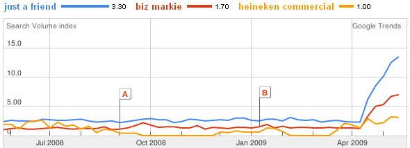

If you've been watching the (thrilling) NBA playoffs, you've probably seen this Heineken commercial featuring Biz Markie's "Just a Friend."
The song was stuck in my head, so I did what any reasonable person would do, I Googled it. Judging from the Google Trends graph below, a lot of other people did too:

The first result was this music video and a gold mine of information. Though the video was posted 10 months ago, most of the 3500+ comments are from the last month. On top of that, somewhere along the line, someone started a comment chain: "Copy and paste if the Heineken commercial during the NBA Playoffs sent you here".
This got me thinking about data and user engagement.
Data is plenty, the value comes from figuring out what it means. As a marketer, you can, at the very least, confirm that some people saw (and remembered!) your commercial (you even know their YouTube usernames). It can only get more interesting from there.
YouTube gives the video uploader access to a variety of statistics about their viewers. Perhaps some folks at Heineken would like to get their hands on that. Perhaps they'd even be willing to pay.
The impact of brand advertising on TV has always been difficult to measure. Aggregating things like YouTube comments and Twitter posts could be one way to make it easier to quantify. However, turning such a vast set of unstructured data into useful insights is no trivial task.
Users want to engage, and they'll find creative ways to do it. I always think it's cool when users find new ways to use a product. But it also shows where there is opportunity for improvement.
In this case, it's not really something missing from the product, but an opportunity to use the knowledge that TV ads drive online searches to create a more cohesive user experience.
At a very basic level, I'd imagine that Heineken might have benefited from advertising on the YouTube music video. Taking it further, one could probably come up with all sorts of interesting way to combine Heineken, YouTube, Biz Markie and the NBA.